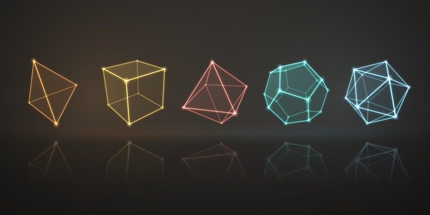

01 / The fourth spatial dimension
Tesseract Explorer
Rotate a tesseract in 4D and move a 3D slice along W to watch the cross-section change shape.
Open the explorer →
Start with a single point. Stretch it, and you get a line. Join lines end to end, and you get a polygon. Fold polygons together, and you get a solid. Then keep going, into dimensions we can't see but can still reason about.
At every step this page follows only the most symmetrical shapes, the regular convex polytopes. A polytope is a flat-sided shape in any number of dimensions: a polygon in 2D, a polyhedron in 3D, a polychoron in 4D, and higher-dimensional cousins beyond. A regular one has every face the same regular shape, and every corner exactly alike.
A convex polytope has no dents, holes or crossing edges. Every corner points outward, and a straight line between any two points inside the shape stays inside it. That rules out star shapes like the pentagram, which are regular in their own way but are a different story, told in a bonus section at the end. Until then, everything is convex.
Here is how many there are at each stop on the way. It's a strange pattern: one, one, infinitely many, five, six, and then three in every dimension, forever.
0D
Every journey starts somewhere, and this one starts with a point. It has no length, no width and no direction, only a position. There's only one kind of point, so 0D has exactly one regular shape.
1D
Pull the point in one direction and it traces out a line segment, with a point at each end. Every segment is the same shape, only longer or shorter, so 1D also has exactly one.
2D
Now join segments end to end, turning a corner at each join, until the path closes into a loop. That's a polygon.
A regular polygon has sides of equal length and equal corner angles. Here that always means a convex polygon, which never doubles back on itself: a five-pointed star also has equal sides and angles, but its edges cross, so it isn't counted here (stars get a bonus section at the end).
You can make a polygon with any number of sides, so 2D has infinitely many. As the number of sides p grows, each interior angle, (p − 2) × 180° ÷ p, creeps toward 180° and the shape approaches a circle. You can think of a circle as the end of that road: a polygon with infinitely many sides, each infinitely short. Strictly, a circle never quite gets there, since it has no straight sides or corners at all, which is why it isn't counted among the polygons.
The interior angle (the highlighted arc) is what decides which polygons can build a solid.
2D → 3D
To leave the flat plane, polygons have to tilt up out of it. To make a corner of a solid, gather identical polygons around one point. Laid flat, they leave a gap (highlighted). Fold them up until the gap closes and their edges meet. Repeat that same corner everywhere, and the surface closes up into a Platonic solid, shown faintly once the corner snaps shut.
If the polygons already fill 360° when flat, there's no gap to close and they can't fold. They tile the plane instead. More polygons than that won't even fit around the point.
Triangles , squares and pentagons are the only regular polygons whose corners leave a gap to close, so they are the only ones that can fold up into a solid. Hexagons fill 360° exactly and lie flat, and polygons with more sides overflow.
Every regular polytope in 3D and higher is built from these three: look at any 2D face of any shape further down this page and it will be a triangle , square or pentagon . The small symbol in the top-left corner of each shape's card shows which. Pentagons drop out after 4D, so from 5D on only triangles and squares remain.
3D
Repeat each of those five corners all the way around and the surface closes up into a solid. Each solid is built from one kind of regular polygon, with the same number meeting at every corner. Plato tied four of them to the classical elements and the dodecahedron to the heavens. Euclid closed his Elements by proving that no other convex solids exist.
At each corner the face angles must add up to less than 360°. If they add up to exactly 360°, the faces lie flat and you get a tiling. If they add up to more, the faces can't fit around a point. Only five combinations stay under the limit.
| Faces at a corner | Angle sum | Result |
|---|---|---|
| 3 triangles | 180° | Tetrahedron |
| 4 triangles | 240° | Octahedron |
| 5 triangles | 300° | Icosahedron |
| 6 triangles | 360° | Flat tiling |
| 3 squares | 270° | Cube |
| 4 squares | 360° | Flat tiling |
| 3 pentagons | 324° | Dodecahedron |
| 3 hexagons | 360° | Flat tiling |
Schläfli symbol {p,q} means q regular p-gons meet at each vertex. So the cube is {4,3}: three squares at every corner, and each square has four vertices (a 4-gon).
Duals swap faces and vertices. Put a dot at the center of every face of a cube and connect them, and you get an octahedron. The dual of {p,q} is {q,p}. The tetrahedron {3,3} is its own dual.
Count a solid's corners (V, for vertices), its edges (E) and its faces (F). Leonhard Euler noticed in 1750 that for every convex solid, V − E + F comes out to exactly 2. A cube has 8 − 12 + 6 = 2. A dodecahedron has 20 − 30 + 12 = 2. Each card above lists its V, E and F, so you can check the rest.
Size and shape don't matter, only how the surface joins up. Draw a new edge across a face and you add one edge and one face, which cancel. Put a new corner in the middle of an edge and you add one corner and one edge, which also cancel. However you reshape or subdivide the surface, the total stays 2. That 2 belongs to every surface shaped like a sphere.
A surface with holes gives a smaller number. A solid shaped like a picture frame, with one hole through it, gives 0, and each extra hole takes away another 2. Two of the star solids give −6, and in 4D the formula gains a term for cells.
3D → 4D
We can't fold solids into 4D by hand (though we can watch the shadow of a fold), so how do we get there? Look back at how we came. Three of the Platonic solids can be built up from a single point by repeating one simple move, adding a dimension each time. Make the same move once more and it carries each of them into 4D. It keeps working after that too, which is why these three families exist in every dimension.
In the build animations above, while each shape climbs into 4D, the new fourth direction, W, is drawn at a slight slant so you can watch points move along it. At the end, the view swings round to look straight down W. Seen that way, anything further along W simply looks smaller and sits in the middle. The tesseract becomes the familiar cube inside a cube, and the 5-cell becomes a tetrahedron with its fifth point at the centre, joined to every corner.
The 16-cell hides something in this view. Its two new points sit at opposite ends of the W axis, so looking straight down it stacks them exactly on top of each other at the centre. Each of them joins all six corners of the octahedron, and those twelve edges overlap in pairs, so you see six spokes lining up into three straight lines through the middle: the octahedron with its three axes drawn in. The drawing shows 6 points and 18 lines, but the 16-cell really has 8 vertices and 24 edges. A quarter of it is hidden behind the rest.
These three moves work on any shape, not just regular ones. Slide a copy of a triangle and you get a triangular prism. Slide a dodecahedron into 4D and you get a dodecahedral prism. Add a point above a square and you get a square pyramid. The results are perfectly good shapes one dimension up, just not regular, because their faces and corners don't all match.
Starting from a single point and repeating the same move every time keeps each step regular, which is why these three families go on forever. Not every regular shape comes from these moves, though. The dodecahedron and icosahedron, the 120-cell and 600-cell, and the 24-cell are built differently, and none of these exceptional families extends to 5D or higher.
Relax the rules a little and higher dimensions fill up fast. 3D has 13 Archimedean solids, like the soccer ball, whose faces are regular polygons of more than one kind and whose corners are all alike. In 4D there are 47 such convex shapes, not counting prisms, and only six of them are regular. 4D also has infinitely many duoprisms, made by "multiplying" two polygons, such as a triangle by a pentagon. The regular shapes are the rarest, most symmetrical few.
4D
This is where the journey leaves the world we can see. In 4D the building blocks are regular solids, called cells, glued face to face around every edge. Ludwig Schläfli found all six around 1852. Five of them are direct analogues of the Platonic solids. The sixth, the 24-cell, has no counterpart in any other dimension.
These drawings are perspective shadows: the 4D shape is rotated in 4D, then projected down to 3D and onto the screen, the same way a cube's shadow can look like a square inside a square.
| 3D solid | 4D analogue | Its cells |
|---|---|---|
| Tetrahedron | 5-cell | Tetrahedra |
| Cube | Tesseract | Cubes |
| Octahedron | 16-cell | Tetrahedra |
| Dodecahedron | 120-cell | Dodecahedra |
| Icosahedron | 600-cell | Tetrahedra |
| None | 24-cell | Octahedra |
With C for cells, Euler's formula becomes V − E + F − C = 0. For the tesseract that's 16 − 32 + 24 − 8 = 0.
That 0 isn't a mistake: the answer alternates with dimension. A 2D polygon gives V − E = 0 (a square has 4 − 4), a 3D solid gives 2, a 4D shape gives 0, and a 5D shape gives 2 again.
The symbols gain a third number. {p,q,r} means r of the {p,q} cells meet around each edge. The tesseract is {4,3,3}: three cubes around every edge.
Rotation really happens in a plane, not around an axis. When a top spins, its X and Z directions are being turned into each other. 3D has three such planes: XY, XZ and YZ. 4D has six: those three, plus three that each mix the fourth direction, W, with X, Y or Z.
Think of a cube's shadow on a wall. Spin the cube flat against the wall and the shadow just spins. Tip it toward the wall and the near face shrinks while the far face grows, until they swap places. The cube never bends, but its shadow turns inside out. Turning a tesseract through W does the same one dimension up: the small inner cube, small only because it is further away in W, grows and moves outward while the outer cube shrinks inward. They pass through each other and swap, and the picture is a cube inside a cube again. In 4D every edge keeps its length and every corner stays square throughout. Only the shadow distorts.
Slice it in Hyperslice ↗Every 4D shape on this page, in the cards above and at the end of each climb in Three ways to climb a dimension, moves in two separate ways, and each has its own button. Pause 3D rotation controls an ordinary spin, which only turns the shadow, like a solid object turning in your hand. Auto-turn through W turns the shape through the fourth dimension, which changes the shadow's shape: the parts further along W, drawn smaller and nearer the middle, swell outward as the outer parts shrink inward, until they have traded places. Pause the 3D rotation to watch that on its own. Drag through W, or holding Shift as you drag, does it by hand. The shape itself never bends or stretches; only its shadow distorts.
4D, unfolded
Cut a solid along some of its edges and it opens out flat into a net: a cube into a cross of six squares. Fold the squares back up and the cube closes. A 4D shape can be cut open the same way, into a net of solids laid out in ordinary 3D space. Fold each solid up about the face it shares with its neighbour and the 4D shape closes. They all fold into W, a direction none of us can point to, so we can only watch the shadow. Below, each of the six regular 4D shapes from the section above is folded up from its net.
Each row pairs a fold we can see, a solid folding up in 3D, with its 4D cousin, seen straight down W. In that view anything further along W looks smaller and sits nearer the middle, so a cell folding away seems to shrink and slide inward, though in 4D it stays a perfect, rigid solid. The cell to follow is drawn in cyan , and cracks that have yet to close are highlighted.
5D and up
From 5D upward, the angle budget gets so tight that only three families survive, and they exist in every dimension n. These are the descendants of the tetrahedron, the cube and the octahedron. The dodecahedron's line ends at the 120-cell and the icosahedron's at the 600-cell.
Like the 4D drawings, these are perspective shadows: each hidden direction is projected away in turn, so parts further along it look smaller and sit inside the rest. Use the slider to choose the dimension. As in 4D, Auto-turn and Drag through turn a shape through just one hidden direction (the one picked in the menu), so what you see change comes only from that dimension.
From here on, nothing new ever appears. Climb to 10D or 1,000D and you'll find the same three: a simplex, a cube and an orthoplex, the distant descendants of the triangle , the square and the square (diamond) from 2D. The richest stops on the journey are 3D and 4D, where the five Platonic solids and their six cousins live.
Bonus
The journey above is complete, but it only followed convex shapes. Any shape that isn't convex is called non-convex, and there are two ways to be one:
Under the classical definition of regular that this page uses (a single, finite shape with flat faces), a regular shape can't be concave. Every corner of a regular shape is the same, so if one corner pointed inward, they all would. A closed outline can't do that without crossing itself, and once it crosses itself it's a star. So every regular non-convex shape is a star, and stars are what this section is about. Looser definitions of regular allow more exotic objects, such as infinite or zigzagging "skew" polyhedra, but those are beyond this page.
This section counts only the regular ones. Non-convex shapes in general are endless, from any dented polygon to the 53 other uniform star polyhedra, which mix more than one kind of face. Allow regular stars, and the count at each stop changes:
Every star polygon is drawn from a recipe of two numbers:
The result is written {p/q}. With q = 1 you join neighbours and get the ordinary polygon: {5/1} is just the pentagon. With five points and q = 2, each line skips a point, the lines cross, and you get the pentagram {5/2} , the smallest star polygon. Every edge is the same length and every point has the same angle, so each one is regular.
Two rules keep a recipe valid:
Six points have no star at all, but every other number of points from 5 up has at least one, and larger numbers have several: seven points give both {7/2} and {7/3}. So, just like convex polygons, there are infinitely many. The angle under each star below is the angle at each of its points.
A Platonic solid is set by two things: the shape of its faces, and how the faces gather around each corner. In a star solid, one of the two is a star:
Either way, the faces have to pass through each other to fit together. There are exactly four of these solids. The symbol in the corner of each card below shows its face shape.
None of them needs new corners. Three sit on the icosahedron's 12 corners and one on the dodecahedron's 20, joined up in a different way.
Johannes Kepler described the two with star faces around 1619, though one had already appeared in a 15th-century floor inlay in St Mark's Basilica in Venice, sometimes credited to Paolo Uccello. Louis Poinsot found the two with star corners in 1809, and three years later Augustin Cauchy proved there are no more.
All four corners are built on the pentagram, but in two different ways. Two of them use pentagram faces. The other two use ordinary pentagons or triangles, arranged around the corner in a pentagram.
To see that second kind, look straight down at one corner of an ordinary icosahedron. Its five triangles go once around the point in order, and joining their outer ends draws a pentagon. At a corner of the great icosahedron, each triangle skips over its neighbour, the same way {5/2} skips every other point of five. The five triangles go around the point twice before they close, and joining their outer ends in that order draws a pentagram. The great dodecahedron does the same with pentagons.
Each of these corners folds up from flat faces, just like the Platonic solids'. Gather the faces around a point and fold them up until the gap (highlighted) closes:
Once a corner closes, the solid's other faces slide in, ring by ring: the same corner, repeated at every point. Then the finished star solid stays behind faintly.
A fraction in a Schläfli symbol means a star. The top number is how many points sit evenly around a circle, and the bottom is how many places you step along when joining them. {5/2} joins every second point of five, so the lines cross into a pentagram and wind twice round the middle.
The small stellated dodecahedron is {5/2,5}: pentagram faces , five at each corner.
The great dodecahedron is {5,5/2}: ordinary pentagons , five at each corner, but the five wind twice around it, like the points of a pentagram .
Duals still swap the numbers. {5/2,5} and {5,5/2} are a dual pair, and so are {5/2,3} and {3,5/2}.
For the small stellated dodecahedron and the great dodecahedron, V − E + F = 12 − 30 + 12 = −6, not 2. Euler's 2 only holds for surfaces shaped like a sphere (see how it works), and these two aren't.
Their faces pass through each other, but the lines where one face cuts through another aren't real edges. They're just places where the surface crosses itself. Imagine pulling the faces apart so they stop crossing, while keeping each face joined to the same neighbours along the same edges. A convex solid would come out shaped like a sphere. These two come out as a surface with four holes, like a pretzel with four loops. You can't see the holes in the model, because building that surface from flat, regular faces forces it to pass through itself and hides them.
Each hole takes 2 off Euler's total, so four holes give 2 − 4 × 2 = −6. Pulled apart the same way, the other two star solids come out shaped like a sphere, so they still give 2.
A 4D shape's symbol {p,q,r} describes three things: its faces {p}, its cells {p,q}, and how many cells gather around each edge, r. In a star polychoron, a 5/2 appears in one of those slots, and where it sits tells you where the star is:
One, the grand stellated 120-cell {5/2,5,5/2}, has stars in two slots. As in 3D, none of them needs new corners. Nine sit on the 600-cell's 120 corners, and one, the great grand stellated 120-cell, sits on the 120-cell's 600. They are the same points, joined up differently.
Ludwig Schläfli found four of them in the 1850s. He set the other six aside because their cells or corners are shaped like the two star solids where Euler's formula stops giving 2. Edmund Hess completed the list of ten in 1883.
| Name | Symbol | Where the star is | Cells | Found by |
|---|---|---|---|---|
| Small stellated 120-cell | {5/2,5,3} | Faces | 120 small stellated dodecahedra | Hess |
| Great stellated 120-cell | {5/2,3,5} | Faces | 120 great stellated dodecahedra | Schläfli |
| Great grand stellated 120-cell | {5/2,3,3} | Faces | 120 great stellated dodecahedra | Schläfli |
| Great 120-cell | {5,5/2,5} | Cells | 120 great dodecahedra | Hess |
| Great grand 120-cell | {5,5/2,3} | Cells | 120 great dodecahedra | Hess |
| Great icosahedral 120-cell | {3,5/2,5} | Cells | 120 great icosahedra | Hess |
| Icosahedral 120-cell | {3,5,5/2} | Around each edge | 120 icosahedra | Hess |
| Grand 120-cell | {5,3,5/2} | Around each edge | 120 dodecahedra | Schläfli |
| Grand 600-cell | {3,3,5/2} | Around each edge | 600 tetrahedra | Schläfli |
| Grand stellated 120-cell | {5/2,5,5/2} | Faces and edges | 120 small stellated dodecahedra | Hess |
The reason none exist in 5D and up is a pattern running through every star so far:
With nothing left to build a pentagram on, there are no regular star polytopes from 5D upward. The three convex families are the whole story.
Hyperslice is an interactive geometry lab I built, and it's live here on my website. It comes in two parts.
01 / The fourth spatial dimension
Rotate a tesseract in 4D and move a 3D slice along W to watch the cross-section change shape.
Open the explorer →02 / One dimension down
The same idea one dimension down: a sphere passes through a wall, and the wall sees only a circle.
Open the primer →A note: only the first three dimensions here are spatial in the geometric sense. The video treats time as the 4th, and its higher dimensions are metaphorical and philosophical rather than geometric.